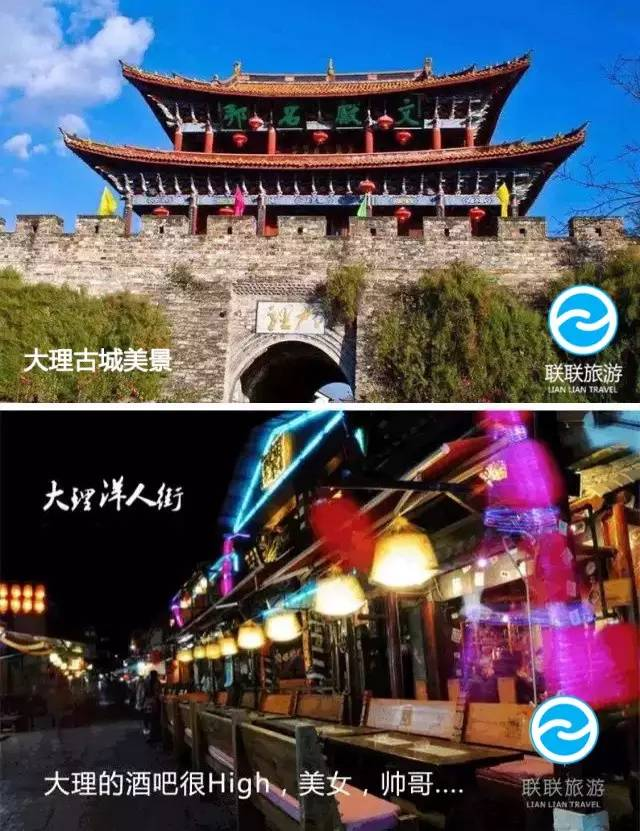
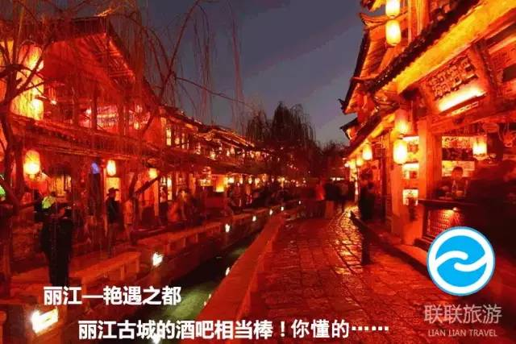
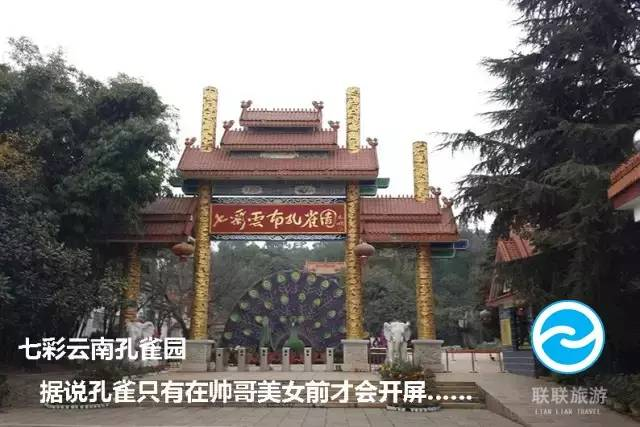
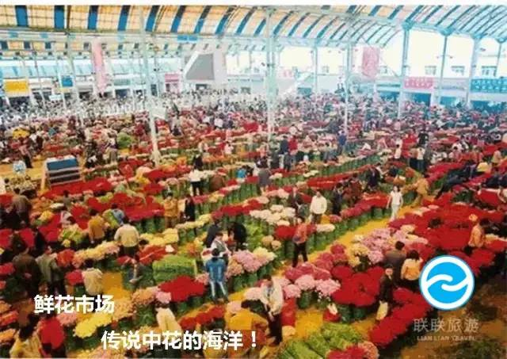

为感谢各位顾客的支持, 白水西岳旅行从正规渠道争取到了100张价值2468元六日五夜云南旅游套票，并决定把这些票全部拿出来免费赠送给大家！！
对，你没有看错，是免费送给大家！
数量有限，领完即止！。经过考察，绝无强制消费！粉丝只需付99元报名费用，套票有效期至2018年12月31日。
注意！！只有100张！！！
居住：大理
中午13：00之前到达昆明，在14：00左右乘车赴大理，游览大理古城、洋人街。大理古城东临碧波荡漾的洱海，西倚常年青翠的苍山，形成了“一水绕苍山，苍山抱古城”的城市格局，城内“家家流水，户户养花”名不虚传。游客还可以夜游古城，享受到东方古朴的小桥流水建筑与西方酒吧文化的强烈视觉冲击。
居住：丽江
早餐后乘车赴丽江，中餐后前往被称为玉龙雪山第一村——玉湖古村落，之后骑马游览曾今的纳西王避暑山庄、玉龙雪山胜景——玉柱擎天景区。游览世界文化遗产——丽江古城、四方街，领略丽江古城“家家流水、户户垂杨”的高原姑苏景致，尽情品位丽江的独特魅力。
居住：楚雄
早餐后游览丽江的标志性景点之一的黑龙潭公园，乘车返回大理，参观大理白族民居寸家大院，欣赏白族歌舞表演；品尝白族三道茶：一苦、二甜、三回味。后乘坐游船观赏渔民操作的洱海鱼鹰表演。乘车赴楚雄，晚餐后入住酒店。
居住：石林
早餐后，乘车赴九乡风景区，游览地下喀斯特地貌——九乡AAAA级。晚餐品尝著名的宜良烤鸭，后入住石林县城。
居住：昆明
早餐后返回昆明，游览七彩云南孔雀园，用中餐，下午游览滇池大坝，与西伯利亚海鸥共同嬉戏，入住酒店。
居住：昆明
早餐后，导游会带你置身于四季鲜花论斤卖的云南最大的鲜花市场，徜徉在鲜花的海洋里面，我们也就结束了这次愉快溢彩之旅。
旅游行程穿插有3至4个购物店，此为旅游业行规。行程中所含购物店本着公平自愿的原则，不强迫购物，所进购物店均为星级购物店，商品保证品质，票据齐全。
游全程无强制消费环节，敬请放心，若存在强制消费可向云南旅游质监执法机构进行投诉，电话：96927